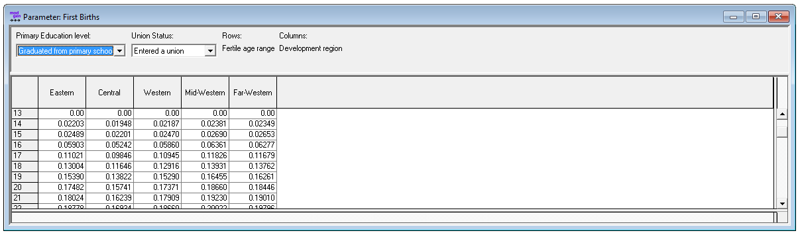

1.8. Script 8: First Births¶
First births are modeled from the census depending on education, age, region of residence and marriage using logistic regression. Models are estimated separately by education and assume proportionality between regions.
1.8.1. File output¶
The code below generates model parameters stored in a Modgen .dat file
- First birth rates by education, union status, age and region
- A birth trend parameter by parity and year with default values (no trend)

1.8.2. Code¶
####################################################################################################
#
# DYNAMIS-POP Parameter Generation File 8 - First Births
# This file is generic and works for all country contexts.
# Input file: globals_for_analysis.RData (To generate such a file run the setup script)
# Last Update: Martin Spielauer 2018-05-12
#
####################################################################################################
####################################################################################################
# Clear work space, load required packages and the input object file
####################################################################################################
rm(list=ls())
library(haven)
library(dplyr)
library(data.table)
library(sp)
library(maptools)
library(survival)
library(fmsb)
library(eha)
load(file="globals_for_analysis.RData")
####################################################################################################
# alldat: ever-married females 10.5 -50.5 who were childless 1 year ago
####################################################################################################
alldat <- g_residents_dat
# Set Parameter Output File
parafile <- file(g_para_firstbirths, "w")
# select observations
alldat <- alldat[alldat$M_MALE == 0 & alldat$M_AGE >= 10.5 & alldat$M_AGE < 50.5,]
alldat <- alldat[alldat$M_PARITY == alldat$M_BIR12,]
# variables
alldat$age <- as.integer(alldat$M_AGE-0.5)
alldat$birth <- as.logical(alldat$M_BIR12 > 0)
####################################################################################################
# Regressions
####################################################################################################
n_regions <- length(unique(alldat$M_ROR))
# logistic regression age 10-14 married
BirthYoungMar <- glm(birth ~ factor(age)+factor(M_EDUC)+factor(M_ROR), family = quasibinomial,
weights = M_WEIGHT, data = alldat[ !is.na(alldat$M_AGEMAR) & alldat$age < 15 ,])
# Educ 0
if (count(alldat[ !is.na(alldat$M_AGEMAR) & alldat$age == 10 & alldat$M_EDUC==0,]) > 0) {
BirthYoungMarPredict0 <- predict(BirthYoungMar,data.frame(age=rep(10,each=n_regions),M_ROR=rep(0:(n_regions-1),1), M_EDUC=0))
BirthYoungMarPredict0 <- exp(BirthYoungMarPredict0) / (1+exp(BirthYoungMarPredict0))
} else BirthYoungMarPredict0 <-rep(0,n_regions)
if (count(alldat[ !is.na(alldat$M_AGEMAR) & alldat$age == 11 & alldat$M_EDUC==0,]) > 0) {
a_add <- predict(BirthYoungMar,data.frame(age=rep(11,each=n_regions),M_ROR=rep(0:(n_regions-1),1), M_EDUC=0))
a_add <- exp(a_add) / (1+exp(a_add))
} else a_add <- rep(0,n_regions)
BirthYoungMarPredict0 <- c(BirthYoungMarPredict0, a_add)
if (count(alldat[ !is.na(alldat$M_AGEMAR) & alldat$age == 12 & alldat$M_EDUC==0,]) > 0) {
a_add <- predict(BirthYoungMar,data.frame(age=rep(12,each=n_regions),M_ROR=rep(0:(n_regions-1),1), M_EDUC=0))
a_add <- exp(a_add) / (1+exp(a_add))
} else a_add <- rep(0,n_regions)
BirthYoungMarPredict0 <- c(BirthYoungMarPredict0, a_add)
if (count(alldat[ !is.na(alldat$M_AGEMAR) & alldat$age == 13 & alldat$M_EDUC==0,]) > 0) {
a_add <- predict(BirthYoungMar,data.frame(age=rep(13,each=n_regions),M_ROR=rep(0:(n_regions-1),1), M_EDUC=0))
a_add <- exp(a_add) / (1+exp(a_add))
} else a_add <- rep(0,n_regions)
BirthYoungMarPredict0 <- c(BirthYoungMarPredict0, a_add)
if (count(alldat[ !is.na(alldat$M_AGEMAR) & alldat$age == 14 & alldat$M_EDUC==0,]) > 0) {
a_add <- predict(BirthYoungMar,data.frame(age=rep(14,each=n_regions),M_ROR=rep(0:(n_regions-1),1), M_EDUC=0))
a_add <- exp(a_add) / (1+exp(a_add))
} else a_add <- rep(0,n_regions)
BirthYoungMarPredict0 <- c(BirthYoungMarPredict0, a_add)
# Educ 1
if (count(alldat[ !is.na(alldat$M_AGEMAR) & alldat$age == 10 & alldat$M_EDUC==1,]) > 0) {
BirthYoungMarPredict1 <- predict(BirthYoungMar,data.frame(age=rep(10,each=n_regions),M_ROR=rep(0:(n_regions-1),1), M_EDUC=1))
BirthYoungMarPredict1 <- exp(BirthYoungMarPredict1) / (1+exp(BirthYoungMarPredict1))
} else BirthYoungMarPredict1 <-rep(0,n_regions)
if (count(alldat[ !is.na(alldat$M_AGEMAR) & alldat$age == 11 & alldat$M_EDUC==1,]) > 0) {
a_add <- predict(BirthYoungMar,data.frame(age=rep(11,each=n_regions),M_ROR=rep(0:(n_regions-1),1), M_EDUC=1))
a_add <- exp(a_add) / (1+exp(a_add))
} else a_add <- rep(0,n_regions)
BirthYoungMarPredict1 <- c(BirthYoungMarPredict1, a_add)
if (count(alldat[ !is.na(alldat$M_AGEMAR) & alldat$age == 12 & alldat$M_EDUC==1,]) > 0) {
a_add <- predict(BirthYoungMar,data.frame(age=rep(12,each=n_regions),M_ROR=rep(0:(n_regions-1),1), M_EDUC=1))
a_add <- exp(a_add) / (1+exp(a_add))
} else a_add <- rep(0,n_regions)
BirthYoungMarPredict1 <- c(BirthYoungMarPredict1, a_add)
if (count(alldat[ !is.na(alldat$M_AGEMAR) & alldat$age == 13 & alldat$M_EDUC==1,]) > 0) {
a_add <- predict(BirthYoungMar,data.frame(age=rep(13,each=n_regions),M_ROR=rep(0:(n_regions-1),1), M_EDUC=1))
a_add <- exp(a_add) / (1+exp(a_add))
} else a_add <- rep(0,n_regions)
BirthYoungMarPredict1 <- c(BirthYoungMarPredict1, a_add)
if (count(alldat[ !is.na(alldat$M_AGEMAR) & alldat$age == 14 & alldat$M_EDUC==1,]) > 0) {
a_add <- predict(BirthYoungMar,data.frame(age=rep(14,each=n_regions),M_ROR=rep(0:(n_regions-1),1), M_EDUC=1))
a_add <- exp(a_add) / (1+exp(a_add))
} else a_add <- rep(0,n_regions)
BirthYoungMarPredict1 <- c(BirthYoungMarPredict1, a_add)
# Educ 2
if (count(alldat[ !is.na(alldat$M_AGEMAR) & alldat$age == 10 & alldat$M_EDUC==2,]) > 0) {
BirthYoungMarPredict2 <- predict(BirthYoungMar,data.frame(age=rep(10,each=n_regions),M_ROR=rep(0:(n_regions-1),1), M_EDUC=2))
BirthYoungMarPredict2 <- exp(BirthYoungMarPredict2) / (1+exp(BirthYoungMarPredict2))
} else BirthYoungMarPredict2 <-rep(0,n_regions)
if (count(alldat[ !is.na(alldat$M_AGEMAR) & alldat$age == 11 & alldat$M_EDUC==2,]) > 0) {
a_add <- predict(BirthYoungMar,data.frame(age=rep(11,each=n_regions),M_ROR=rep(0:(n_regions-1),1), M_EDUC=2))
a_add <- exp(a_add) / (1+exp(a_add))
} else a_add <- rep(0,n_regions)
BirthYoungMarPredict2 <- c(BirthYoungMarPredict2, a_add)
if (count(alldat[ !is.na(alldat$M_AGEMAR) & alldat$age == 12 & alldat$M_EDUC==2,]) > 0) {
a_add <- predict(BirthYoungMar,data.frame(age=rep(12,each=n_regions),M_ROR=rep(0:(n_regions-1),1), M_EDUC=2))
a_add <- exp(a_add) / (1+exp(a_add))
} else a_add <- rep(0,n_regions)
BirthYoungMarPredict2 <- c(BirthYoungMarPredict2, a_add)
if (count(alldat[ !is.na(alldat$M_AGEMAR) & alldat$age == 13 & alldat$M_EDUC==2,]) > 0) {
a_add <- predict(BirthYoungMar,data.frame(age=rep(13,each=n_regions),M_ROR=rep(0:(n_regions-1),1), M_EDUC=2))
a_add <- exp(a_add) / (1+exp(a_add))
} else a_add <- rep(0,n_regions)
BirthYoungMarPredict2 <- c(BirthYoungMarPredict2, a_add)
if (count(alldat[ !is.na(alldat$M_AGEMAR) & alldat$age == 14 & alldat$M_EDUC==2,]) > 0) {
a_add <- predict(BirthYoungMar,data.frame(age=rep(14,each=n_regions),M_ROR=rep(0:(n_regions-1),1), M_EDUC=2))
a_add <- exp(a_add) / (1+exp(a_add))
} else a_add <- rep(0,n_regions)
BirthYoungMarPredict2 <- c(BirthYoungMarPredict2, a_add)
# logistic regression age 10-14 unmarried
BirthYoungSing <- glm(birth ~ factor(age)+factor(M_EDUC), family = quasibinomial, weights = M_WEIGHT,
data = alldat[is.na(alldat$M_AGEMAR) & alldat$age < 15,])
BirthYoungSingPredict0 <- predict(BirthYoungSing,data.frame(age=rep(10:14,each=n_regions),M_EDUC=0))
BirthYoungSingPredict0 <- exp(BirthYoungSingPredict0) / (1+exp(BirthYoungSingPredict0))
BirthYoungSingPredict1 <- predict(BirthYoungSing,data.frame(age=rep(10:14,each=n_regions),M_EDUC=1))
BirthYoungSingPredict1 <- exp(BirthYoungSingPredict1) / (1+exp(BirthYoungSingPredict1))
BirthYoungSingPredict2 <- predict(BirthYoungSing,data.frame(age=rep(10:14,each=n_regions),M_EDUC=2))
BirthYoungSingPredict2 <- exp(BirthYoungSingPredict2) / (1+exp(BirthYoungSingPredict2))
# logistic regression age 15-49 unmarried
BirthSing <- glm(birth ~ factor(age)+factor(M_EDUC)+factor(M_ROR), family = quasibinomial, weights = M_WEIGHT,
data = alldat[ is.na(alldat$M_AGEMAR) & alldat$age >= 15 ,])
BirthSingPredict0 <- predict(BirthSing,data.frame(age=rep(15:49,each=n_regions),M_ROR=rep(0:(n_regions-1),35), M_EDUC=0))
BirthSingPredict0 <- exp(BirthSingPredict0) / (1+exp(BirthSingPredict0))
BirthSingPredict1 <- predict(BirthSing,data.frame(age=rep(15:49,each=n_regions),M_ROR=rep(0:(n_regions-1),35), M_EDUC=1))
BirthSingPredict1 <- exp(BirthSingPredict1) / (1+exp(BirthSingPredict1))
BirthSingPredict2 <- predict(BirthSing,data.frame(age=rep(15:49,each=n_regions),M_ROR=rep(0:(n_regions-1),35), M_EDUC=2))
BirthSingPredict2 <- exp(BirthSingPredict2) / (1+exp(BirthSingPredict2))
# Married age >= 15
# logistic regression education level 0
BirthEduc0 <- glm(birth ~ factor(age)+factor(M_ROR), family = quasibinomial, weights = M_WEIGHT, data =
alldat[alldat$M_EDUC==0 & !is.na(alldat$M_AGEMAR) & alldat$age >=15,])
BirthEduc0Predict <- predict(BirthEduc0,data.frame(age=rep(15:49,each=n_regions),M_ROR=rep(0:(n_regions-1),35)))
BirthEduc0Predict <- exp(BirthEduc0Predict) / (1+exp(BirthEduc0Predict))
# logistic regression education level 1
BirthEduc1 <- glm(birth ~ factor(age)+factor(M_ROR), family = quasibinomial, weights = M_WEIGHT,
data = alldat[alldat$M_EDUC==1 & !is.na(alldat$M_AGEMAR) & alldat$age >=15,])
BirthEduc1Predict <- predict(BirthEduc1,data.frame(age=rep(15:49,each=n_regions),M_ROR=rep(0:(n_regions-1),35)))
BirthEduc1Predict <- exp(BirthEduc1Predict) / (1+exp(BirthEduc1Predict))
# logistic regression education level 3
BirthEduc2 <- glm(birth ~ factor(age)+factor(M_ROR), family = quasibinomial, weights = M_WEIGHT,
data = alldat[alldat$M_EDUC==2 & !is.na(alldat$M_AGEMAR) & alldat$age >=15,])
BirthEduc2Predict <- predict(BirthEduc2,data.frame(age=rep(15:49,each=n_regions),M_ROR=rep(0:(n_regions-1),35)))
BirthEduc2Predict <- exp(BirthEduc2Predict) / (1+exp(BirthEduc2Predict))
####################################################################################################
# Write the parameter FirstBirthRates[PRIMARY_LEVEL][UNION_STATUS][FERTILE_AGE_RANGE][PROVINCE_NAT]
####################################################################################################
cat("parameters {\n //EN First Birth Rates\ndouble FirstBirthRates[PRIMARY_LEVEL][UNION_STATUS][FERTILE_AGE_RANGE][PROVINCE_NAT] = {\n", file=parafile)
cat(format(round(BirthYoungSingPredict0,5),scientific=FALSE), file=parafile, sep=", ", append=TRUE)
cat(",\n", file=parafile, append=TRUE)
cat(format(round(BirthSingPredict0,5),scientific=FALSE), file=parafile, sep=", ", append=TRUE)
cat(",\n", file=parafile, append=TRUE)
cat(format(round(BirthYoungMarPredict0,5),scientific=FALSE), file=parafile, sep=", ", append=TRUE)
cat(",\n", file=parafile, append=TRUE)
cat(format(round(BirthEduc0Predict,5),scientific=FALSE), file=parafile, sep=", ", append=TRUE)
cat(",\n", file=parafile, append=TRUE)
cat(format(round(BirthYoungSingPredict1,5),scientific=FALSE), file=parafile, sep=", ", append=TRUE)
cat(",\n", file=parafile, append=TRUE)
cat(format(round(BirthSingPredict1,5),scientific=FALSE), file=parafile, sep=", ", append=TRUE)
cat(",\n", file=parafile, append=TRUE)
cat(format(round(BirthYoungMarPredict1,5),scientific=FALSE), file=parafile, sep=", ", append=TRUE)
cat(",\n", file=parafile, append=TRUE)
cat(format(round(BirthEduc1Predict,5),scientific=FALSE), file=parafile, sep=", ", append=TRUE)
cat(",\n", file=parafile, append=TRUE)
cat(format(round(BirthYoungSingPredict2,5),scientific=FALSE), file=parafile, sep=", ", append=TRUE)
cat(",\n", file=parafile, append=TRUE)
cat(format(round(BirthSingPredict2,5),scientific=FALSE), file=parafile, sep=", ", append=TRUE)
cat(",\n", file=parafile, append=TRUE)
cat(format(round(BirthYoungMarPredict2,5),scientific=FALSE), file=parafile, sep=", ", append=TRUE)
cat(",\n", file=parafile, append=TRUE)
cat(format(round(BirthEduc2Predict,5),scientific=FALSE), file=parafile, sep=", ", append=TRUE)
cat("\n};", file=parafile, append=TRUE)
####################################################################################################
# Write parameter for birth trends
####################################################################################################
cat("//EN Birth Trends\n", file=parafile, append=TRUE)
cat("double BirthTrends[PARITY_RANGE1][SIM_YEAR_RANGE] = {(1515) 1.0 };\n", file=parafile, append=TRUE)
cat("\n};", file=parafile, append=TRUE)
close(parafile)